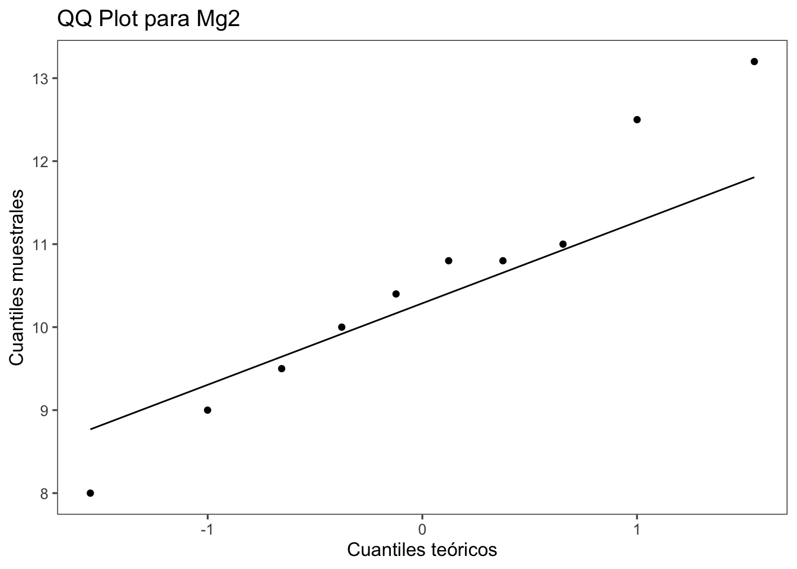
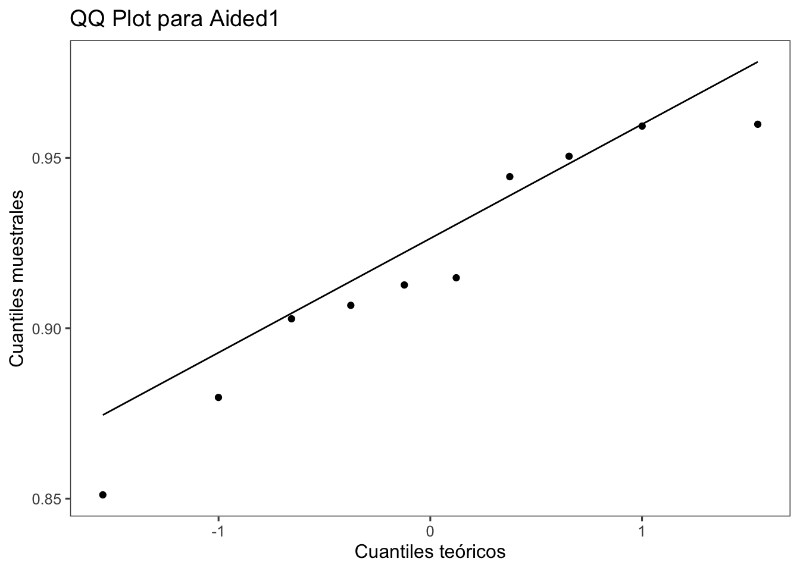

Codigo
library(magrittr) # para usar pipes
library(ggplot2) # para gráficos
library(dplyr)
library(readxl)
library(tidyr)
library(DT)
library(ggthemes)En esta lección veremos los tipos de análisis según el número y tipo de variables independientes (niveles del factor) y también el número de tratamientos o grupos a comparar.
La prueba t compara DOS MEDIAS (2 tratamientos) y muestra si las diferencias entre estas medias son significativas. Como toda prueba estadística, la prueba t también proporciona una medida del valor p. Es decir, al final, habremos calculado la probabilidad de que la diferencia encontrada (entre las medias) haya sido por casualidad. Existen 2 tipos más comunes de prueba t:
Los términos paramétrico y no paramétrico se refieren a la media y la desviación estándar, que son los parámetros que definen las poblaciones que presentan distribución normal. Veremos cómo trabajar en estas dos situaciones diferentes.
Situación: Un investigador realizó un experimento para evaluar el efecto de un micronutriente, el magnesio (Mg), añadido a la solución del suelo cultivado con plantas de arroz, en el manejo de una enfermedad fúngica. El experimento se realizó en un diseño completamente al azar con 10 repeticiones, siendo cada repetición una maceta de planta. Uno de los tratamientos es el llamado control, o testigo, sin el suplemento mineral. El segundo es aquel con el suplemento de Mg en una dosis de 2 mM. En cada una de las repeticiones se obtuvo un valor promedio del tamaño de las lesiones en un tiempo determinado después de la inoculación.
Ahora, vamos a trabajar con estos datos y obtener estadísticas que describan el conjunto de datos, como la tendencia central y la dispersión de los datos. En este caso, trabajamos con la media (mean), varianza (var), desviación estándar (sd), error estándar (se) e intervalo de confianza (ci). El intervalo de confianza es solo para inferencia visual.
data2 <- data_mg %>%
group_by(trat) %>%
summarise(
mean_com = mean(comp),
sd_comp = sd(comp),
var_comp = var(comp),
n = n(),
se_comp = sd_comp / sqrt(n - 1),
ci = se_comp * qt(0.025, df = 9)
)
data2 |>
DT::datatable(
extensions = 'Buttons',
options = list(dom = 'Bfrtip',
buttons = c('excel', "csv"))) |>
formatRound(c('mean_com', 'sd_comp', 'var_comp','se_comp','ci'), 2)La manera más simple de visualizar, en el caso de más de 6 repeticiones, es usando boxplots junto con los datos de cada repetición. Aquí visualizaremos los datos en un gráfico de barras vertical con error estándar.
Ahora visualizamos los datos con el intervalo de confianza (ci). A continuación, las barras verticales representan el intervalo de confianza del 95%.
El conjunto de datos está en formato largo, así que la variable respuesta de interés está solo en una columna. Existen varias formas de separar en dos vectores los datos de respuesta para cada tratamiento. Una de ellas es mediante la función pivot_wider, la cual coloca las respuestas en dos columnas, una para cada tratamiento. Para eso, crearemos el conjunto data_mg2. Ahora es posible visualizar las respuestas (tamaño de la lesión) para cada tratamiento usando el conjunto de datos original, ya que ggplot2 requiere los datos en formato largo.
La prueba t es una prueba paramétrica y para realizarla se deben cumplir 2 premisas: normalidad y homogeneidad de la varianza (homocedasticidad). En caso de que sea necesario transformar los datos para que sean normales, es aceptable.
Welch Two Sample t-test
data: data_mg2$Mg2 and data_mg2$control
t = -8.1549, df = 17.354, p-value = 2.423e-07
alternative hypothesis: true difference in means is not equal to 0
95 percent confidence interval:
-6.490393 -3.825607
sample estimates:
mean of x mean of y
10.520 15.678 La orden de ejecución de las pruebas debe ser: shapiro.test (prueba de normalidad) > var.test (prueba de homocedasticidad) > si p < 0.05 > t.test. En caso de que la varianza sea heterogénea, usar var.equal = FALSE. En el caso de datos pareados, usar el argumento paired = TRUE.
Podemos confirmar la premisa de la homocedasticidad con la prueba F. En el caso de dos grupos, la función que se puede usar es var.test de R. Vamos a usar el formato largo y llamar a los dos vectores del conjunto. Verifique el valor p en la salida del análisis.
F test to compare two variances
data: Mg2 and control
F = 1.4781, num df = 9, denom df = 9, p-value = 0.5698
alternative hypothesis: true ratio of variances is not equal to 1
95 percent confidence interval:
0.3671417 5.9508644
sample estimates:
ratio of variances
1.478111 La verificación de este supuesto también puede realizarse gráficamente a través del boxplot para los tratamientos vs residuos. Si existe homocedasticidad, se espera que los boxplots sean similares.
La normalidad puede ser probada mediante procedimientos visuales y pruebas específicas. Para probar la normalidad de los datos, realizamos la prueba de Shapiro.
La verificación visual de la premisa de normalidad se realiza con qqplot (QQ-Plot), que permite verificar si una muestra sigue una distribución gaussiana. Podemos simplemente usar las funciones qqnorm() y qqline() para cada una de las variables analizadas.
##qqnorm() ##qqline()

Si no se cumplen las premisas de normalidad, ¿qué prueba podría usarse? En el caso de dos grupos, hay dos posibilidades: una es usar una prueba no paramétrica o una prueba basada en remuestreo (bootstrap) de los datos, las cuales no dependen del modelo de distribución. Veamos un ejemplo.
Situación: Se realizó un experimento para evaluar el efecto del uso de una escala en la precisión y exactitud de evaluaciones visuales de severidad por evaluadores. La hipótesis a probar fue que las evaluaciones utilizando una escala diagramática como ayuda son más precisas que sin el uso de la ayuda. Se eligieron aleatoriamente diez evaluadores y cada uno hizo dos evaluaciones. Se obtuvieron cinco variables que componen la medida de la concordancia de las estimaciones. Dado que las medidas se repitieron en el tiempo para cada evaluador, las muestras son del tipo dependientes.
Importación de datos y preparación del conjunto.
# A tibble: 6 × 7
assessment rater acuracia precisao vies_geral vies_sistematico vies_constante
<chr> <chr> <dbl> <dbl> <dbl> <dbl> <dbl>
1 Unaided A 0.809 0.826 0.979 1.19 0.112
2 Unaided B 0.722 0.728 0.991 0.922 -0.106
3 Unaided C 0.560 0.715 0.783 1.16 0.730
4 Unaided D 0.818 0.819 0.999 0.948 -0.00569
5 Unaided E 0.748 0.753 0.993 1.10 0.0719
6 Unaided F 0.695 0.751 0.925 0.802 0.336 Podemos confirmar la premisa de homocedasticidad con la prueba F.
F test to compare two variances
data: Aided1 and Unaided
F = 0.17041, num df = 9, denom df = 9, p-value = 0.01461
alternative hypothesis: true ratio of variances is not equal to 1
95 percent confidence interval:
0.04232677 0.68605885
sample estimates:
ratio of variances
0.1704073 Realizamos la prueba de Shapiro para cada variable.

Realizamos la prueba t para muestras pareadas.
Paired t-test
data: escala3$Aided1 and escala3$Unaided
t = 5.9364, df = 9, p-value = 0.000219
alternative hypothesis: true mean difference is not equal to 0
95 percent confidence interval:
0.1144707 0.2554241
sample estimates:
mean difference
0.1849474 La prueba t paramétrica es una herramienta estadística utilizada para comparar las medias de dos grupos independientes y determinar si existen diferencias significativas entre ellas.
La prueba t se basa en calcular la diferencia entre las medias de dos grupos y determinar si esta diferencia es estadísticamente significativa o si podría haber ocurrido debido al azar.
Hipótesis Nula (H0): Afirma que no hay diferencia significativa entre las medias de los dos grupos.
Hipótesis Alternativa (H1): Afirma que hay una diferencia significativa entre las medias de los dos grupos.
Vamos a suponer que tienes dos grupos de datos, y quieres aplicar una prueba t para determinar si las medias de estos grupos son significativamente diferentes.
Supongamos que tienes dos vectores grupo1 y grupo2 con los datos de ambos grupos. Aquí te muestro cómo realizar una prueba t de dos muestras en R:
Welch Two Sample t-test
data: grupo1 and grupo2
t = -0.95669, df = 7.8672, p-value = 0.3672
alternative hypothesis: true difference in means is not equal to 0
95 percent confidence interval:
-6.151506 2.551506
sample estimates:
mean of x mean of y
16.0 17.8 Definición de datos: Creamos dos vectores grupo1 y grupo2 que contienen las observaciones de cada grupo.
Prueba t: Utilizamos la función t.test() en R para realizar la prueba t. En este caso, asumimos que las varianzas de ambos grupos son iguales (var.equal = TRUE por defecto en t.test()).
Interpretación del resultado: El objeto resultado contiene todos los resultados de la prueba t, incluyendo el valor de t, el valor p y las medias de ambos grupos.
Valor p: Es el valor de probabilidad asociado con la prueba t. Si el valor p es menor que el nivel de significancia (usualmente 0.05), se rechaza la hipótesis nula y se concluye que hay una diferencia significativa entre las medias de los dos grupos.
Intervalo de Confianza: También se proporciona un intervalo de confianza que indica el rango dentro del cual se espera que se encuentre la diferencia real entre las medias poblacionales.
Asegúrate de entender bien las condiciones bajo las cuales se puede aplicar la prueba t, como la normalidad de los datos y la igualdad de varianzas entre los grupos.
En casos donde no se cumplan estas condiciones, es recomendable utilizar pruebas no paramétricas u otras técnicas estadísticas apropiadas.
Esta es una manera básica de realizar una prueba t de dos muestras en R. ¡Espero que te sea útil para entender cómo funciona y cómo aplicarla en tus propios análisis de datos!
Una prueba no paramétrica no hace ninguna suposición sobre la distribución de la población o el tamaño de la muestra. La wilcox.test es la prueba para datos no paramétricos equivalente a la prueba t para datos paramétricos. La prueba de Wilcoxon se usa para probar si las medianas de las muestras son iguales en los casos en que la suposición de normalidad no se satisface o cuando no es posible verificar esa suposición.
Wilcoxon signed rank exact test
data: escala3$Aided1 and escala3$Unaided
V = 55, p-value = 0.001953
alternative hypothesis: true location shift is not equal to 0Este script explica cómo realizar análisis estadísticos básicos comparando dos grupos, tanto para muestras dependientes como independientes, utilizando pruebas t y pruebas no paramétricas, con énfasis en la verificación de las premisas necesarias para aplicar estos métodos.
# Tipos de Pruebas para Análisis Estadístico
En esta lección veremos los tipos de análisis según el número y tipo de variables independientes (niveles del factor) y también el número de tratamientos o grupos a comparar.
## Prueba t
La prueba t compara DOS MEDIAS (2 tratamientos) y muestra si las diferencias entre estas medias son significativas. Como toda prueba estadística, la prueba t también proporciona una medida del valor p. Es decir, al final, habremos calculado la probabilidad de que la diferencia encontrada (entre las medias) haya sido por casualidad. Existen 2 tipos más comunes de prueba t:
- Prueba t para 2 muestras **dependientes** (o pareadas): compara las medias de la **misma población** en diferentes momentos de tiempo (por ejemplo, antes y después).
- Prueba t para 2 muestras **independientes** (o no pareadas): compara las medias de **dos poblaciones distintas**.
Los términos paramétrico y no paramétrico se refieren a la media y la desviación estándar, que son los parámetros que definen las poblaciones que presentan distribución normal. Veremos cómo trabajar en estas dos situaciones diferentes.
### Dos Tratamientos Independientes
*Situación*: Un investigador realizó un experimento para evaluar el efecto de un micronutriente, el magnesio (Mg), añadido a la solución del suelo cultivado con plantas de arroz, en el manejo de una enfermedad fúngica. El experimento se realizó en un diseño completamente al azar con 10 repeticiones, siendo cada repetición una maceta de planta. Uno de los tratamientos es el llamado control, o testigo, sin el suplemento mineral. El segundo es aquel con el suplemento de Mg en una dosis de 2 mM. En cada una de las repeticiones se obtuvo un valor promedio del tamaño de las lesiones en un tiempo determinado después de la inoculación.
### Preparo Pre-Análisis
#### Carga de paquetes e importación del conjunto de datos
```{r}
#| warning: false
#| message: false
library(magrittr) # para usar pipes
library(ggplot2) # para gráficos
library(dplyr)
library(readxl)
library(tidyr)
library(DT)
library(ggthemes)
```
```{r}
data_mg <- read_excel("dados-diversos.xlsx")
data_mg |>
DT::datatable(
extensions = 'Buttons',
options = list(dom = 'Bfrtip',
buttons = c('excel', "csv")))
```
#### Cálculo de Estadísticas Descriptivas
Ahora, vamos a trabajar con estos datos y obtener estadísticas que describan el conjunto de datos, como la tendencia central y la dispersión de los datos. En este caso, trabajamos con la media (mean), varianza (var), desviación estándar (sd), error estándar (se) e intervalo de confianza (ci). El intervalo de confianza es solo para inferencia visual.
```{r}
data2 <- data_mg %>%
group_by(trat) %>%
summarise(
mean_com = mean(comp),
sd_comp = sd(comp),
var_comp = var(comp),
n = n(),
se_comp = sd_comp / sqrt(n - 1),
ci = se_comp * qt(0.025, df = 9)
)
data2 |>
DT::datatable(
extensions = 'Buttons',
options = list(dom = 'Bfrtip',
buttons = c('excel', "csv"))) |>
formatRound(c('mean_com', 'sd_comp', 'var_comp','se_comp','ci'), 2)
```
#### Visualización
La manera más simple de visualizar, en el caso de más de 6 repeticiones, es usando boxplots junto con los datos de cada repetición. Aquí visualizaremos los datos en un gráfico de barras vertical con error estándar.
```{r}
data2 |>
ggplot(aes(trat, mean_com)) +
geom_col(width = 0.5, fill = "steelblue") +
geom_errorbar(aes(
ymin = mean_com - se_comp,
ymax = mean_com + se_comp),
width = 0.1) +
ylim(0, 20) +
theme_few()+
labs(x = "", y = "Tamaño promedio (mm)")
```
#### Intervalo de Confianza
Ahora visualizamos los datos con el intervalo de confianza (ci). A continuación, las barras verticales representan el intervalo de confianza del 95%.
```{r}
data2 |>
ggplot(aes(trat, mean_com)) +
geom_col(width = 0.5, fill = "steelblue") +
geom_errorbar(aes(
ymin = mean_com - ci,
ymax = mean_com + ci),
width = 0.1) +
ylim(0, 20) +
theme_few()+
labs(x = "", y = "Tamaño promedio (mm)")
```
#### Preparación de Datos
El conjunto de datos está en formato largo, así que la variable respuesta de interés está solo en una columna. Existen varias formas de separar en dos vectores los datos de respuesta para cada tratamiento. Una de ellas es mediante la función `pivot_wider`, la cual coloca las respuestas en dos columnas, una para cada tratamiento. Para eso, crearemos el conjunto `data_mg2`. Ahora es posible visualizar las respuestas (tamaño de la lesión) para cada tratamiento usando el conjunto de datos original, ya que `ggplot2` requiere los datos en formato largo.
```{r}
data_mg2 <- data_mg |>
pivot_wider(names_from = trat, values_from = comp)
data_mg2 |>
DT::datatable(
extensions = 'Buttons',
options = list(dom = 'Bfrtip',
buttons = c('excel', "csv")))
```
### Prueba de Hipótesis - Prueba t
La prueba t es una prueba paramétrica y para realizarla se deben cumplir 2 premisas: normalidad y homogeneidad de la varianza (homocedasticidad). En caso de que sea necesario transformar los datos para que sean normales, es aceptable.
```{r}
t.test(data_mg2$Mg2, data_mg2$control, paired = FALSE)
```
La orden de ejecución de las pruebas debe ser: `shapiro.test` (prueba de normalidad) > `var.test` (prueba de homocedasticidad) > si p < 0.05 > `t.test`. En caso de que la varianza sea heterogénea, usar `var.equal = FALSE`. En el caso de datos pareados, usar el argumento `paired = TRUE`.
#### Homocedasticidad
Podemos confirmar la premisa de la homocedasticidad con la prueba F. En el caso de dos grupos, la función que se puede usar es `var.test` de R. Vamos a usar el formato largo y llamar a los dos vectores del conjunto. Verifique el valor p en la salida del análisis.
```{r}
attach(data_mg2)
var.test(Mg2, control)
```
La verificación de este supuesto también puede realizarse gráficamente a través del boxplot para los tratamientos vs residuos. Si existe homocedasticidad, se espera que los boxplots sean similares.
#### Normalidad
La normalidad puede ser probada mediante procedimientos visuales y pruebas específicas. Para probar la normalidad de los datos, realizamos la prueba de Shapiro.
```{r}
shapiro.test(Mg2)
shapiro.test(control)
```
#### Análisis Visual de la Normalidad
La verificación visual de la premisa de normalidad se realiza con qqplot (QQ-Plot), que permite verificar si una muestra sigue una distribución gaussiana. Podemos simplemente usar las funciones `qqnorm()` y `qqline()` para cada una de las variables analizadas.
##qqnorm()
##qqline()
```{r}
# Crear el QQ plot para la variable Mg2 usando ggplot2
ggplot(data_mg2, aes(sample = Mg2)) +
stat_qq() +
stat_qq_line() +
labs(title = "QQ Plot para Mg2", x = "Cuantiles teóricos", y = "Cuantiles muestrales") +
theme_few()
```
```{r}
# Crear el QQ plot para la variable Mg2 usando ggplot2
ggplot(data_mg2, aes(sample = control)) +
stat_qq() +
stat_qq_line() +
labs(title = "QQ Plot para control", x = "Cuantiles teóricos", y = "Cuantiles muestrales") +
theme_few()
```
### Dos Tratamientos Dependientes
Si no se cumplen las premisas de normalidad, ¿qué prueba podría usarse? En el caso de dos grupos, hay dos posibilidades: una es usar una prueba no paramétrica o una prueba basada en remuestreo (bootstrap) de los datos, las cuales no dependen del modelo de distribución. Veamos un ejemplo.
*Situación*: Se realizó un experimento para evaluar el efecto del uso de una escala en la precisión y exactitud de evaluaciones visuales de severidad por evaluadores. La hipótesis a probar fue que las evaluaciones utilizando una escala diagramática como ayuda son más precisas que sin el uso de la ayuda. Se eligieron aleatoriamente diez evaluadores y cada uno hizo dos evaluaciones. Se obtuvieron cinco variables que componen la medida de la concordancia de las estimaciones. Dado que las medidas se repitieron en el tiempo para cada evaluador, las muestras son del tipo dependientes.
#### Preparo Pre-Análisis
Importación de datos y preparación del conjunto.
```{r}
escala <- read_excel("dados-diversos.xlsx", "escala")
head(escala)
escala2 <- escala |>
select(assessment, rater, acuracia)
escala3 <- escala2 |>
pivot_wider(names_from = assessment, values_from = acuracia)
escala3 |>
DT::datatable(
extensions = 'Buttons',
options = list(dom = 'Bfrtip',
buttons = c('excel', "csv"))) |>
formatRound(c('Unaided','Aided1'), 2)
```
#### Verificación de Premisas
##### Homocedasticidad
Podemos confirmar la premisa de homocedasticidad con la prueba F.
```{r}
attach(escala3)
var.test(Aided1, Unaided)
```
##### Normalidad
Realizamos la prueba de Shapiro para cada variable.
```{r}
shapiro.test(Aided1)$p.value
shapiro.test(Unaided)$p.value
```
##### Análisis Visual de la Normalidad
```{r}
# Crear el QQ plot para la variable Mg2 usando ggplot2
ggplot(escala3, aes(sample = Aided1)) +
stat_qq() +
stat_qq_line() +
labs(title = "QQ Plot para Aided1", x = "Cuantiles teóricos", y = "Cuantiles muestrales") +
theme_few()
```
```{r}
# Crear el QQ plot para la variable Mg2 usando ggplot2
ggplot(escala3, aes(sample = Unaided)) +
stat_qq() +
stat_qq_line() +
labs(title = "QQ Plot para Unaided", x = "Cuantiles teóricos", y = "Cuantiles muestrales") +
theme_few()
```
### Prueba t Paramétrica
Realizamos la prueba t para muestras pareadas.
```{r}
t_escala <- t.test(escala3$Aided1, escala3$Unaided , paired = TRUE, var.equal = FALSE)
t_escala
```
### Prueba para Datos No Paramétricos
La prueba t paramétrica es una herramienta estadística utilizada para comparar las medias de dos grupos independientes y determinar si existen diferencias significativas entre ellas.
### Funcionamiento de la Prueba t Paramétrica
La prueba t se basa en calcular la diferencia entre las medias de dos grupos y determinar si esta diferencia es estadísticamente significativa o si podría haber ocurrido debido al azar.
1. **Hipótesis Nula (H0)**: Afirma que no hay diferencia significativa entre las medias de los dos grupos.
2. **Hipótesis Alternativa (H1)**: Afirma que hay una diferencia significativa entre las medias de los dos grupos.
### Pasos para realizar la prueba t en R
Vamos a suponer que tienes dos grupos de datos, y quieres aplicar una prueba t para determinar si las medias de estos grupos son significativamente diferentes.
#### Ejemplo
Supongamos que tienes dos vectores `grupo1` y `grupo2` con los datos de ambos grupos. Aquí te muestro cómo realizar una prueba t de dos muestras en R:
```{r}
# Ejemplo de datos de dos grupos
grupo1 <- c(12, 14, 18, 16, 20)
grupo2 <- c(15, 17, 16, 19, 22)
```
```{r}
# Realizar la prueba t de dos muestras (asumiendo varianzas iguales)
resultado <- t.test(grupo1, grupo2)
# Mostrar el resultado
print(resultado)
```
#### Explicación
1. **Definición de datos**: Creamos dos vectores `grupo1` y `grupo2` que contienen las observaciones de cada grupo.
2. **Prueba t**: Utilizamos la función `t.test()` en R para realizar la prueba t. En este caso, asumimos que las varianzas de ambos grupos son iguales (`var.equal = TRUE` por defecto en `t.test()`).
3. **Interpretación del resultado**: El objeto `resultado` contiene todos los resultados de la prueba t, incluyendo el valor de t, el valor p y las medias de ambos grupos.
### Interpretación del Resultado
- **Valor p**: Es el valor de probabilidad asociado con la prueba t. Si el valor p es menor que el nivel de significancia (usualmente 0.05), se rechaza la hipótesis nula y se concluye que hay una diferencia significativa entre las medias de los dos grupos.
- **Intervalo de Confianza**: También se proporciona un intervalo de confianza que indica el rango dentro del cual se espera que se encuentre la diferencia real entre las medias poblacionales.
### Consideraciones
- Asegúrate de entender bien las condiciones bajo las cuales se puede aplicar la prueba t, como la normalidad de los datos y la igualdad de varianzas entre los grupos.
- En casos donde no se cumplan estas condiciones, es recomendable utilizar pruebas no paramétricas u otras técnicas estadísticas apropiadas.
Esta es una manera básica de realizar una prueba t de dos muestras en R. ¡Espero que te sea útil para entender cómo funciona y cómo aplicarla en tus propios análisis de datos!
### Ejemplo Escala
Una prueba no paramétrica no hace ninguna suposición sobre la distribución de la población o el tamaño de la muestra. La `wilcox.test` es la prueba para datos no paramétricos equivalente a la prueba t para datos paramétricos. La prueba de Wilcoxon se usa para probar si las medianas de las muestras son iguales en los casos en que la suposición de normalidad no se satisface o cuando no es posible verificar esa suposición.
```{r}
wilcox.test(escala3$Aided1, escala3$Unaided, paired = TRUE)
```
---
Este script explica cómo realizar análisis estadísticos básicos comparando dos grupos, tanto para muestras dependientes como independientes, utilizando pruebas t y pruebas no paramétricas, con énfasis en la verificación de las premisas necesarias para aplicar estos métodos.